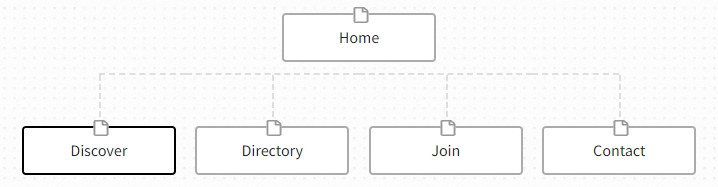

Site Name
The name of the site is "California Chamber of Commerce".
Site Purpose
The primary objective of the California Chamber of Commerce is to facilitate the establishment of robust local networks among business proprietors and foster unity among the business community. This group serves as a collaborative platform for entrepreneurs, producers, and service providers to collectively protect and advance our industries. Businesses that have an interest in being part of the organization are encouraged to register and submit an application on our website.
Scenarios
- How can I get in contact with potential investors for my growing business?
- What benefits does the local government has to offer to small and medium-sized enterprises?
- What paperwork is required to register a company in California city?
- Where can I find business and commercial lawyers and accountants with great references?
- What are some local stories of successfully growing businesses?
Site Map
